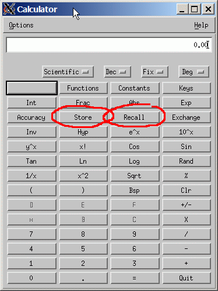
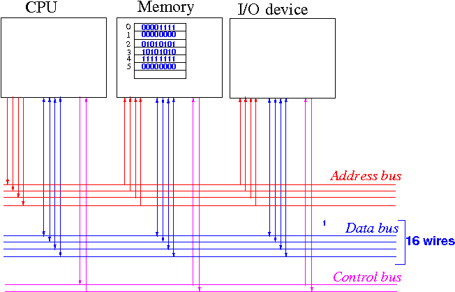
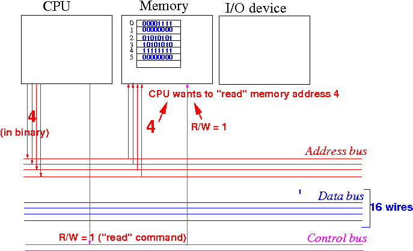
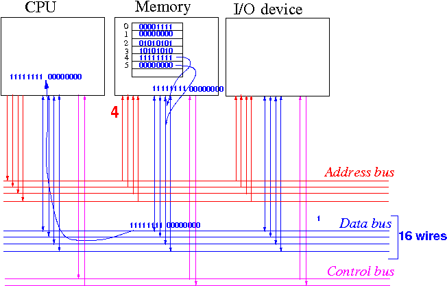
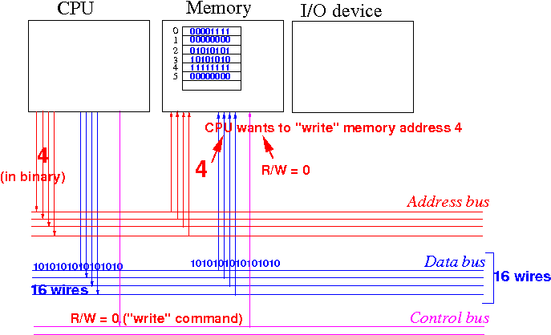
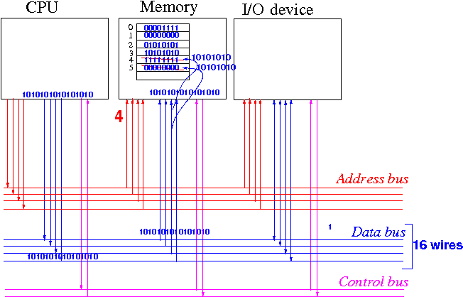

- Each
memory byte can perform
2 basic operations:
- Each memory byte can store (= remember) 8 binary digits
- Each memory byte can retrieve (= recall) the 8 binary digits that is stored in the byte
Analogy:
-
The memory of
a $1 calculator can also
perform 2 basic operations:
store (= write) and
recall (= read)
 The difference between computer memory and the memory of a $1 calculator is:
- The computer memory
has many different
(2N) memory bytes
- You must specify which memory byte or bytes that you want to use
Note:
- The M+ function is
not a
basic (= irreplacable)
function
The M+ function conists of a sequence of (irreplacable) basic functions, namely: the "recall, add, store" operation
It's provided by the calculator for your convenience...
- The computer memory
has many different
(2N) memory bytes
- Read and
write operation to
(computer) memory:
- In Computer Science, the
term "read memory" or
read operation means:
- Recall (and receive) the value stored in memory
- In Computer Science, the
term "write memory" or
write operation means:
- Store a value to memory
- In Computer Science, the
term "read memory" or
read operation means:
- The device (= agent inside the computer)
that performs
read/write operations
is usually
the CPU.
(The other device that can perform read/write operations is the DMA (Direct Memory Access) - you will learn about this in CS355.
In CS255, the only device that performs read/write operation will be the CPU.)
- Data transfer between
CPU and
memory:
- The CPU can
read (= obtain or recall) data
that is stored in the memory
- The CPU can write (= store) data into some cells in the memory
Questions:
- How do the
CPU
specify the
operation (read or write) ??
- How do the CPU specify which memory location the read/write operation will be performed on ???
The address will specify which memory cells the requested operation will be performed !!!
- The CPU can
read (= obtain or recall) data
that is stored in the memory
- Recall that
the memory consists of
many bytes and
each byte is
identified by
an address:

- Recall that the
CPU and
memory are
connected by
3 set of wires (address, data and
system buses):

Each (electrical) wire in the buses can carry a electrical signal that can be:
- Low voltage ( ≡ represents the binary number 0)
- High voltage ( ≡ represents the binary number 1)
The CPU will use high/low voltage signals conveyed through the wires to specify what operation that the CPU wants to perform !!!
- The voltage signals
carried through the wires
of the address bus
represents the
binary number of
the address of the memory
that the CPU wants to
access (= read or write)
- The voltage signals
carried through the wires
of the data bus
represents the
binary data
transferred between
the CPU and
the memory
- The voltage signals
carried through the wires
of the control bus
contains
command indications
made by the CPU
(Each wire in the control bus is associated with a specific operation (= command))
- Example:
- Suppose the CPU wants to
store the
binary number
1010101010101010
into the memory location 4
Then the CPU will emits the following electrical signals:
0000000000000100 (= 4 in binary) on the address bus 1010101010101010 (= the data) on the data bus 0 (= code for the write command) on the R/W wire of the control bus Note: one bit is carried on one wire of a bus !!!When the memory receives these signals, the memory will know that it needs to store the binary data on the data bus wires into its memory location 4
In CS355 you will learn about the different wires/signals on the control bus.
For CS255, all you need to know is there is a R/W signal (= wire) in the control bus where:
0 means: the CPU issues a WRITE command to the memory 1 means: the CPU issues a READ command to the memory
I will give a little more detail on how the CPU reads/writes data from/to memory to help you understand the operation of the computer.
For a full discussion, you will need to take CS355....
- Suppose the CPU wants to
store the
binary number
1010101010101010
into the memory location 4
-
Recall also that the CPU and
Memory are
inter-connected by
3 "buses" (sets of wires) that
can transmit electrical signals to each other:
- The
memory read operation:
- When the CPU
"reads" the memory,
the CPU must
specify the
address
of the memory cells
that it wants to read
- The (memory) read operation will
transfer a copy of
the data stored in the
memory to
the CPU
(The original value stored in the memory is unchanged
The CPU will receive a copy)
- When the CPU
"reads" the memory,
the CPU must
specify the
address
of the memory cells
that it wants to read
-
What happens
inside the computer when
the CPU
reads the
memory:
- The CPU first sends the address of the memory that it wants to read on the address bus
- Then, the CPU sends the "read" command to the memory on the control bus
- The CPU will then
wait for the
memory to
respond
- Upon receiving the above signals,
the memory will
send the content of the
specified memory address on the
data bus
- The CPU can now copy the data on the data bus into an internal memory (located inside the CPU) for further processing
These steps (= events) must proceed in the above order and it is called a read protocol
For a detail discussion of the memory read protocol, you must take CS355
- The following sequence of diagrams
shows an example of
the read operation where the CPU
reads data
from
memory location "4" using a
16 bit
data bus
(= a data bus that consists of 16 wires - each wire can transmit
one bit (0 or 1)):
- Suppose we have the following
memory content:

- When the CPU wants to
read the
value stored in
memory address 4,
the CPU sends
the following signals
onto the system bus:
- The address 4 (in binary - discussed later) on the address bus
- A "Read" command on the control bus -- the read command can be represented by the value "1" on the Read/write (R/W) signal wire of the control bus (see figure
Graphically explained:

- When the memory receives these
signals, it will
send out the
data stored at the requested address
onto the data bus (wires):
 The CPU will receive the data and it can use it in subsequent operations
Notice that the value in memory location 4 is unchanged
- Suppose we have the following
memory content:
|
|
- The system bus
(= address, data and control buses)
are also used to carry signals to perform
write operations to the memory:
The CPU transfer data from itself (= CPU) to the memory as follows:
- The CPU sends the address of the memory that it wants to read on the address bus
- The CPU sends the data that it wish to write to the memory on the data bus
- The CPU sends the "write" command to the memory on the control bus
- The CPU will then
wait for the
memory to
respond
- Upon receiving the above signals, the memory will copy the content on the data bus to the specified memory location
These steps (= events) must also proceed in the above order and it is called a write protocol
Also, for a detail discussion of the memory write protocol, you must take CS355
- The following is an example where the CPU
writes "1010101010101010"
to the
memory location "4" using a
16 bit
data bus
(= a data bus that consists of 16 wires - each wire can transmit
one bit (0 or 1)):
- Suppose we have the following
memory content:
- When the CPU wants to
write (= update) the
value 1010101010101010 to
memory address 4,
the CPU sends
the following signals
onto the system bus:
- The address 4 (in binary - discussed later) on the address bus
- The value 1010101010101010 on the data bus
- A "Write" command on the control bus -- the write command can be represented by the value "0" on the Read/write (R/W) signal wire of the control bus (see figure
Graphically explained:

- When the memory receives these
signals, it will
store the
data in the memory bytes
at the requested address location:
 The memory bytes will retain these value until it get written (updated) with other values
- Suppose we have the following
memory content:
- The memory is used to
store:
- Instructions of a computer program
- Variables used by the computer program
In CS170 and CS171, you have learned that variables can be organized into (different kinds of) data structures:
- Simple variables
("stand-alone" variables, not organized into any structure):
int x; float y;
- Array variables:
int x[10]; float y[3000];
- Linked list variables:
List head;
- Later in the course, we will learn:
- How to reserve memory cells (space)
for variables
- How to access the
different structures of
variables
- In order to access a data structure, You will need to learn how the computer organize the data structures inside the memory
- How to reserve memory cells (space)
for variables